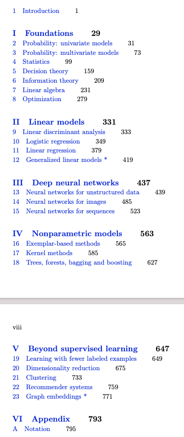

Probabilistic Machine Learning: An Introduction
by Kevin Patrick Murphy.
 MIT Press, 2021.
MIT Press, 2021.
Key links
If you use this book, please be sure to cite
@book{pml1Book,
author = "Kevin P. Murphy",
title = "Probabilistic Machine Learning: An introduction",
publisher = "MIT Press",
year = 2021,
url = "probml.ai"
}
Table of contents

Code to recreate all the figures can be found in a series of colabs, one per chapter,
stored here.
When reading the pdf version of the book, you can right click on any link labeled figures.probml.ai/x.y and it will open up the colab for chapter x;
the cursor should also scroll down to the cell for figure y.
Once you get there,
click on the button labeled 'setup' and it will install any necessary code.
(The first time you do this it may take about 30 seconds, but subsequent setups for other cells in the same chapter should be faster,
even if they open in a new tab.)
After setup, click on the following cell and it will show the source code in the colab editor, and run it for you.
The code for each figure is stored in a separate file, either in the scripts directory,
or the notebooks directory. In the former case, you can click on the 'show source code'
button in the colab to open the source code inside the colab editor; you can then make changes (e.g., to the parameters or data), and rerun it.
Note, however, that changes to local files will not be saved beyond the current colab session. In the latter case, you can click on the 'open colab' button,
and it will open the source notebook in a new tab, which can be edited in the usual way. (Scripts can also be run locally on your laptop,
but you may need to install certain packages, and some may be slow without a GPU. In general it is easier to do everything inside of colab.)
There are also some inline links to code in the body of the book, labeled code.probml.ai/foo; these refer to
demos that are not associated with any figure. Clicking on these links behaves in a similar way to the figure code (opening a tab for the appropriate
colab cell).
In addition to the above, there are various forms of
supplementary material
associated with each chapter, such as additional jupyter notebooks and tutorials.
These will continue to be updated even after the book is published.
Endorsements
-

-
"The deep learning revolution has transformed the field of machine learning over the last decade.
It was inspired by attempts to mimic the way the brain learns but it is grounded in basic principles of statistics,
information theory,
decision theory and optimization. This book does an excellent job of explaining these principles and describes many of the "classical"
machine learning methods that make use of them. It also shows how the same principles can be applied in deep learning systems
that contain many layers of features.
This provides a coherent framework in which one can understand the relationships and tradeoffs between many different ML approaches,
both old and new." -- Geoff Hinton. U. Toronto/ Google.
-
"Kevin Murphy’s book on machine learning is a superbly written,
comprehensive treatment of the field, built on a foundation of probability theory.
It is rigorous yet readily accessible, and
is a must-have for anyone interested in gaining a deep understanding of machine learning."
-- Chris Bishop,
Microsoft Research.
-
"This book is a clear, concise, and rigorous introduction to the foundations of machine learning.
It beautifully bridges between the "traditional" topics and the more "modern" deep learning methods,
creating a unifying framework that contextualizes both of them. It's the book I recommend for people who are new to the
field and want to obtain a comprehensive view of the core principles and methods."
-- Daphne Koller, Insitro/ Stanford.
-
"This is a remarkable book covering the conceptual,
theoretical and computational foundations of probabilistic machine learning,
starting with the basics and moving seamlessly to the leading edge of this field.
The pedagogical structure of the book is extremely useful for teaching. One of my favorite parts is
that most of the figures of the book have a link to the associated
(python, JAX, tensorflow) code that is used to generate them,
often with comparisons between the different computational ways of solving the problems."
-- Michael Brenner, Harvard/ Google.
-
"This book could be titled 'What every ML PhD student should know'.
If you master the material in this book, you will have an outstanding foundation for successful research in machine learning.”
-- Tom Dietterich, U. Oregon
-
"This book delivers a wonderful exposition of modern and traditional machine learning approaches through the language and lens of probabilistic reasoning.
As such, it provides extremely valuable and much needed coherence, generalisation, and mathematical rigour,
allowing the reader to gain a deep understanding of the interconnectivities between many different areas of data science,
and so deliver more effective outcomes.
I highly recommend this second edition"
-- Mark Briers, Alan Turing Institute.
- "There are many books on machine learning out there, but none gives
such a well-rounded, up-to-date, and comprehensive view of the
field as this one. We use this book as reference reading for our
students taking the advanced machine learning course at Oxford to
introduce them to fundamental as well as current topics in the
field. I'm amazed at the amount of work that went into this
book---which will surely be used by many to train the next
generation of machine learning experts."
-- Yarin Gal, U. Oxford
-
"This is a terrific resource for machine learning students and researchers.
If you want to understand the foundations of modern machine learning then this is the book to read.
The text is particularly strong at marrying classical ideas from statistics and probability with more modern concepts such as deep learning."
-- Padhraic Smyth, UC Irvine
- "My favorite machine learning book just received a face-lift!
'Probabilistic Machine Learning: An Introduction' is the most
comprehensive and accessible book on modern machine learning by a
large margin.
It now also covers the latest developments in deep learning and
causal discovery. With this upgrade it will remain the reference
book for our field that every respected researcher needs to have
on their desk." -- Max Welling,
U. Amsterdam
-
"Prof Murphy's 2012 book was a triumph, covering both basic material
and also the state-of-the-art. The new 'Probabilistic Machine
Learning: An Introduction' is similarly excellent, and includes new
material, especially on deep learning and recent developments. It
will become an essential reference for students and researchers in
probabilistic machine learning."
-- Chris Williams, U. Edinburgh
Acknowledgements
I would like to thank the following people for helping with this book.
- People who helped write some sections for vol 1:
Sami Abu-El-Haija,
Mathieu Blondel,
Ines Chami,
Krzysztof Choromanski,
Roy Frostig,
Justin Gilmer,
Zico Kolter,
Frederick Kunster,
Lihong Li,
Si Yi Meng,
Aaron Mishkin,
Byran Perozzi,
Colin Raffel,
Mark Schmidt,
Sharan Vaswani,
Andrew Wilson.
- Proof readers: Peter Cerno, John Fearns.
- People who have provided feedback on parts of the book:
Sebastien Bratieres,
Kai Brodersen,
Frances Coll,
Daniel Galvez,
Abhishek Kumar,
Max Lepikhin,
Aaron Michelony,
Horst Stühler,
Hal Varian,
Clem Wang.
- People who have helped with the figures:
Sandeep Choudhary, and others who are credited in the figure captions.
- People who have helped with the code: Mahmoud Soliman,
Aleyna Kara,
Srikar Jilugu,
Drishti Patel,
Ming Liang Ang,
Gerardo Durán-Martín,
and other people listed
here.
{kind=link}